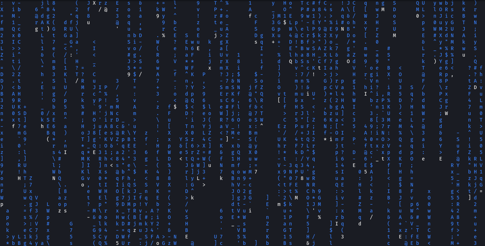

1. Free Surveillance System using a spare Android phone & laptop

This is my first open source project, which is also uploaded to github and made available for the public
to use / modify under the norms of MIT licence. You can download the code for this project from
Here & watch the demo of this system
Here
.
The Requirements ->
You just need a spare android phone, a laptop with any debian distro that can run Metasploit. You'll also need to have Python3 and
libraries like pyautogui & requests installed in your system. Moreover
for interacting with this system I've used a discord server where you can
input certain commands to remotely monitor your surveillance feed.
How to set this up -> 1. Create a Discord Server and one text group within it, which will be dedicated thereafter for uploading the surveillance images and controlling the system through user-defined commands.
2. Now make sure that you extract the [Access token] and [Group ID] of your Discord Server's text group.
Need Help extracting these 2, watch this ->
Finding Access token and Group Id on Discord
3. Once you have these 2 things, copy them to the [Token URL ID] file.
4. Edit the changes in the Exploit (Bash script) file [edit Listening Port and Listening Host]. Now run the Start script once all changes are made.